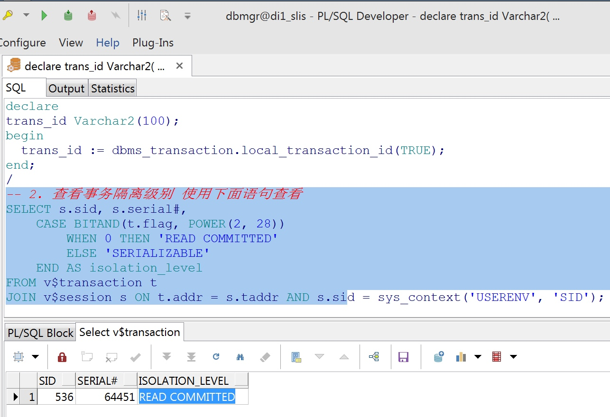
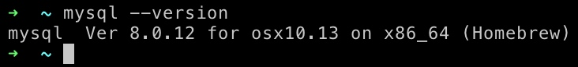
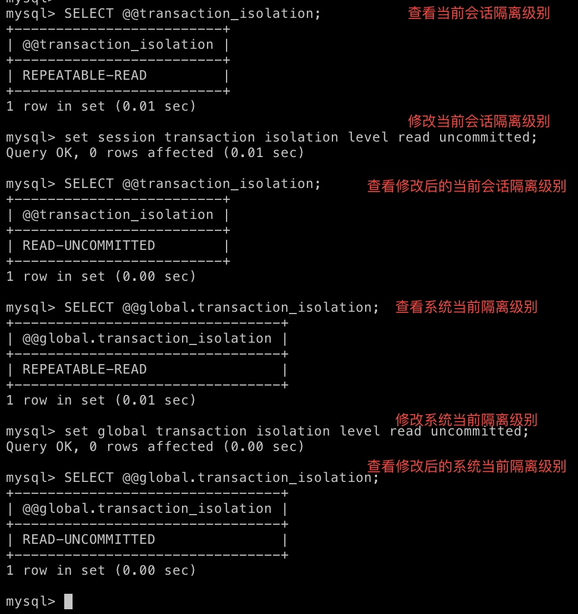

数据库事务隔离级别 与 脏读、不可重复读、幻读
Oracle事务隔离级别
MySQL的四种事务隔离级别
数据库事务隔离级别-- 脏读、幻读、不可重复读（清晰解释）
不可重复读和幻读的区别
- 数据库事务隔离级别
- 查看事物隔离级别
- 脏读 Read uncommitted 读未提交
- 不可重复读 Read committed 读提交
- 幻读 Repeatable read 重复读
- 不可重复读和幻读区别
数据库事务隔离级别
数据库事务的隔离级别有4个，由低到高依次为 Read uncommitted 、Read committed 、Repeatable read 、Serializable ，
这四个级别可以逐个解决 脏读 、不可重复读 、幻读 这几类问题
| Oracle | Mysql | 脏读 | 不可重复读 | 幻读 | |
|---|---|---|---|---|---|
| 支持 | Read uncommitted | ✅ | ✅ | ✅ | |
| 支持 默认级别 | 支持 | Read committed | ❌ | ✅ | ✅ |
| 支持 默认级别 | Repeatable Read | ❌ | ❌ | ✅ | |
| 支持 | 支持 | Serializable | ❌ | ❌ | ❌ |
注 Oracle 还支持 READ ONLY 事务级别
查看事物隔离级别
Oralce
-- 在 PLSQL sql window 里面执行下面一整段代码
-- 1. 首先创建一个事务
declare
trans_id Varchar2(100);
begin
trans_id := dbms_transaction.local_transaction_id(TRUE);
end;
/
-- 2. 查看事务隔离级别 使用下面语句查看
SELECT s.sid, s.serial#,
CASE BITAND(t.flag, POWER(2, 28))
WHEN 0 THEN 'READ COMMITTED'
ELSE 'SERIALIZABLE'
END AS isolation_level
FROM v$transaction t
JOIN v$session s ON t.addr = s.taddr AND s.sid = sys_context('USERENV', 'SID');
-- 3. 修改隔离级别
--已提交读模式：
SET TRANSACTION ISOLATION LEVEL ＝ READ COMMITTED;
-- 串行模式：
SET TRANSACTION ISOLATION LEVEL ＝ SERIALIZABLE;
-- 只读模式：
SET TRANSACTION ＝ READ ONLY;

mysql
Mac 查看本机mysql版本

-- 使用终端连接mysql，输入以下命令
-- 注: MySQL5.8以前版本是 @@tx_isolation， MySQL5.8以后版本是 @@transaction_isolation
-- 本机是 MySQL5.8 所以使用 @@transaction_isolation
-- 1. 查看当前会话隔离级别
SELECT @@transaction_isolation;
-- 2. 查看系统当前隔离级别
SELECT @@global.transaction_isolation;
-- 3. 设置当前会话隔离级别
set session transaction isolation level repeatable read;
-- 4. 设置系统当前隔离级别
set global transaction isolation level repeatable read;

脏读 Read uncommitted 读未提交
脏读就是指当一个事务正在访问数据，并且对数据进行了修改，而这种修改还没有提交到数据库中，这时，另外一个事务也访问这个数据，然后使用了这个数据。
公司发工资了，领导把5000元打到singo的账号上，但是该事务并未提交，而singo正好去查看账户，发现工资已经到账，是5000元整，非常高 兴。可是不幸的是，领导发现发给singo的工资金额不对，是2000元，于是迅速回滚了事务，修改金额后，将事务提交，最后singo实际的工资只有 2000元，singo空欢喜一场。
两个并发的事务，“事务A：领导给singo发工资”、“事务B：singo查询工资账户”，事务B读取了事务A尚未提交的数据。
不可重复读 Read committed 读提交
不可重复读是指在一个事务内，多次读同一数据。在这个事务还没有结束时，另外一个事务也访问该同一数据。那么，在第一个事务中的两次读数据之间，由于第二个事务的修改，那么第一个事务两次读到的的数据可能是不一样的。这样就发生了在一个事务内两次读到的数据是不一样的，因此称为是不可重复读。（即不能读到相同的数据内容）
例如，一个编辑人员两次读取同一文档，但在两次读取之间，作者重写了该文档。当编辑人员第二次读取文档时，文档已更改。原始读取不可重复。如果只有在作者全部完成编写后编辑人员才可以读取文档，则可以避免该问题。
singo拿着工资卡去消费，系统读取到卡里确实有2000元，而此时她的老婆也正好在网上转账，把singo工资卡的2000元转到另一账户，并在 singo之前提交了事务，当singo扣款时，系统检查到singo的工资卡已经没有钱，扣款失败，singo十分纳闷，明明卡里有钱，为 何......
两个并发的事务，“事务A：singo消费”、“事务B：singo的老婆网上转账”，事务A事先读取了数据，事务B紧接了更新了数据，并提交了事务，而事务A再次读取该数据时，数据已经发生了改变。
幻读 Repeatable read 重复读
是指当事务不是独立执行时发生的一种现象，例如第一个事务对一个表中的数据进行了修改，这种修改涉及到表中的全部数据行。同时，第二个事务也修改这个表中的数据，这种修改是向表中插入一行新数据。那么，以后就会发生操作第一个事务的用户发现表中还有没有修改的数据行，就好象
发生了幻觉一样。
例如，一个编辑人员更改作者提交的文档，但当生产部门将其更改内容合并到该文档的主复本时，发现作者已将未编辑的新材料添加到该文档中。如果在编辑人员和生产部门完成对原始文档的处理之前，任何人都不能将新材料添加到文档中，则可以避免该问题。
singo的老婆工作在银行部门，她时常通过银行内部系统查看singo的信用卡消费记录。有一天，她正在查询到singo当月信用卡的总消费金额 （select sum(amount) from transaction where month = 本月）为80元，而singo此时正好在外面胡吃海塞后在收银台买单，消费1000元，即新增了一条1000元的消费记录（insert transaction ... ），并提交了事务，随后singo的老婆将singo当月信用卡消费的明细打印到A4纸上，却发现消费总额为1080元，singo的老婆很诧异，以为出 现了幻觉，幻读就这样产生了
不可重复读和幻读区别
从控制的角度来看,两者的区别就比较大
对于不可重复读, 只需要锁住满足条件的记录
避免不可重复读需要锁行就行
对于幻读, 要锁住满足条件及其相近的记录
避免幻影读则需要锁表
很多人容易搞混不可重复读和幻读，确实这两者有些相似。但不可重复读重点在于update和delete，而幻读的重点在于insert
如果使用锁机制来实现这两种隔离级别，在可重复读中，该sql第一次读取到数据后，就将这些数据加锁，其它事务无法修改这些数据，就可以实现可重复读了。但这种方法却无法锁住insert的数据，所以当事务A先前读取了数据，或者修改了全部数据，事务B还是可以insert数据提交，这时事务A就会 发现莫名其妙多了一条之前没有的数据，这就是幻读，不能通过行锁来避免。需要Serializable隔离级别 ，读用读锁，写用写锁，读锁和写锁互斥，这么做可以有效的避免幻读、不可重复读、脏读等问题，但会极大的降低数据库的并发能力。
所以说不可重复读和幻读最大的区别，就在于如何通过锁机制来解决他们产生的问题。
上文说的，是使用悲观锁机制来处理这两种问题，但是MySQL、ORACLE、PostgreSQL等成熟的数据库，出于性能考虑，都是使用了以乐观锁为理论基础的MVCC（多版本并发控制）来避免这两种问题。
悲观锁
正如其名，它指的是对数据被外界（包括本系统当前的其他事务，以及来自外部系统的事务处理）修改持保守态度，因此，在整个数据处理过程中，将数据处于锁定状态。悲观锁的实现，往往依靠数据库提供的锁机制（也只有数据库层提供的锁机制才能真正保证数据访问的排他性，否则，即使在本系统中实现了加锁机制，也无法保证外部系统不会修改数据）。
在悲观锁的情况下，为了保证事务的隔离性，就需要一致性锁定读。读取数据时给加锁，其它事务无法修改这些数据。修改删除数据时也要加锁，其它事务无法读取这些数据。
乐观锁
相对悲观锁而言，乐观锁机制采取了更加宽松的加锁机制。悲观锁大多数情况下依靠数据库的锁机制实现，以保证操作最大程度的独占性。但随之而来的就是数据库性能的大量开销，特别是对长事务而言，这样的开销往往无法承受。
而乐观锁机制在一定程度上解决了这个问题。乐观锁，大多是基于数据版本（Version）记录机制实现。何谓数据版本？即为数据增加一个版本标识，在基于数据库表的版本解决方案中，一般是通过为数据库表增加一个 “version” 字段来实现。读取出数据时，将此版本号一同读出，之后更新时，对此版本号加一。此时，将提交数据的版本数据与数据库表对应记录的当前版本信息进行比对，如果提交的数据版本号大于数据库表当前版本号，则予以更新，否则认为是过期数据。
要说明的是，MVCC(Multi Version Concurrency Control的简称)的实现没有固定的规范，每个数据库都会有不同的实现方式，这里讨论的是InnoDB的MVCC。